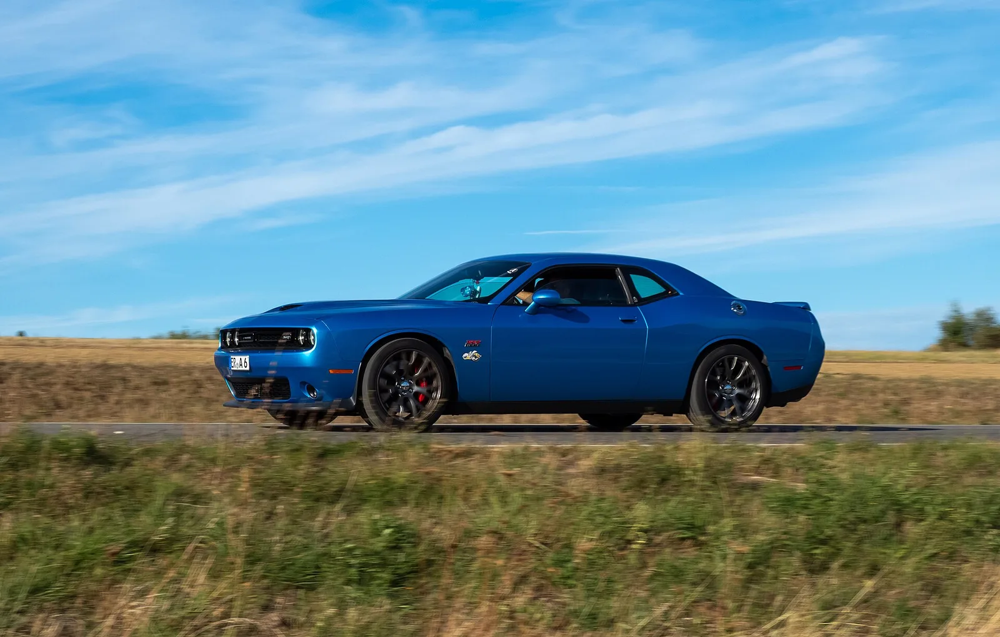

▲ 2015년식 챌린저 SRT 헬캣. 11년이 지나 캠리 신차값이 됐다 ⓒ Wikimedia Commons
2015년식 닷지 챌린저 SRT 헬캣의 중고 시세가 3만4,500~3만5,424달러입니다.
2026년형 토요타 캠리 XSE의 신차 시작가는 3만6,000달러입니다.
707마력과 225마력이 거의 같은 값이 됐습니다. 다만 이 비교에는 빠진 항목이 있습니다.
1. 마력당 가격 계산
| 차량 | 가격 | 출력 | 마력당 |
|---|---|---|---|
| 헬캣(중고, 현재) | 약 35,000달러 | 707마력 | 약 50달러 |
| 캠리 XSE(신차) | 36,000달러 | 225마력 | 약 160달러 |
| 헬캣(2015년 신차) | 59,995달러 | 707마력 | 84.86달러 |
| 카마로 ZL1(당시) | 55,505달러 | 580마력 | 95.70달러 |
| 콜벳 Z06(당시) | 79,000달러 | 650마력 | 121.50달러 |
헬캣은 신차 시절에도 마력당 가격이 압도적으로 낮았습니다. 84.86달러로 카마로 ZL1(95.70달러)과 콜벳 Z06(121.50달러)을 앞섰습니다.
11년이 지나 그 값이 다시 절반이 됐습니다. 약 50달러입니다.
2. 감가가 만든 숫자
| 시점 | 가격 | 기준가 대비 |
|---|---|---|
| 2015년 신차 | 59,995달러 | 100% |
| 2026년 중고(저가 매물) | 34,500달러 | 약 58% |
| 2026년 중고(평균) | 45,017달러 | 약 75% |
11년에 42% 감가는 일반적인 고성능차 기준으로 매우 완만합니다. 같은 기간 대부분의 고성능 세단은 70~80%가 빠집니다.
이유는 헬캣이 이미 수집 대상이 됐기 때문입니다. 대배기량 자연흡기·과급 V8이 규제로 사라지는 흐름에서, 6.2리터 슈퍼차저 V8은 다시 만들어지지 않을 구성입니다.
Classic.com 평균가가 4만5,017달러라는 점도 이를 보여줍니다. 3만4,500달러짜리 매물은 평균보다 훨씬 아래이고, 그 이유가 있을 가능성이 큽니다.
| 가격 | 주행거리 |
|---|---|
| 35,424달러 | 72,000마일 (약 11만 6,000km) |
| 34,500달러 | 더 높은 주행거리 |
7만2,000마일이면 약 11만6,000km입니다. 700마력대 차량으로 이 거리를 달렸다면, 소모품 상태를 확인할 항목이 많습니다.

▲ 11년에 42% 감가는 고성능차로서는 완만한 편이다
3. 마력당 가격이 감추는 것
기사도 헬캣이 "타이어와 연료, 브레이크를 소모한다"고 지적합니다. 다만 구체적 금액은 제시하지 않았습니다.
| 항목 | 헬캣 | 캠리 하이브리드 |
|---|---|---|
| 연료 | 6.2L 슈퍼차저 V8 — 고급유 | 하이브리드 |
| 타이어 | 고성능 대구경 — 마모 빠름 | 일반 규격 |
| 브레이크 | 대형 로터·패드 | 일반 |
| 보험 | 고출력·고연식 — 높다 | 낮다 |
| 보증 | 없음 (11년 경과) | 신차 보증 |
| 고장 리스크 | 부품·공임 모두 비싸다 | 낮다 |
가장 큰 차이는 마지막 두 항목입니다. 신차에는 보증이 붙습니다. 11년 된 700마력 차량에는 없습니다.
"마력당 가격"은 구매 시점에만 성립하는 지표입니다. 소유 기간 전체로 보면 계산이 달라집니다.
4. 두 차는 애초에 다른 물건이다
| 항목 | 헬캣 | 캠리 XSE |
|---|---|---|
| 형태 | 2도어 쿠페 | 4도어 세단 |
| 주 용도 | 주말·취미 | 매일 출퇴근 |
| 1/4마일 | 11.2초 (NHRA 공인, 스트리트 타이어) | 해당 없음 |
| 가족 사용 | 제한적 | 적합 |
| 겨울 주행 | 후륜 707마력 — 매우 불리 | 무난 |
기사의 결론도 이 지점입니다. 감가된 헬캣을 "매일 타는 캠리 XSE 값으로 살 수 있는 근사한 주말용 기계"로 규정합니다. 캠리를 대체하라는 것이 아닙니다.
그리고 매물 선택에 대한 조언을 덧붙입니다. 가장 싼 매물이 아니라 정비 이력이 좋은 매물을 찾으라는 것입니다.

▲ 캠리 XSE는 매일 타는 차, 헬캣은 주말에 타는 차다
5. 국내 기준으로 읽으면
챌린저 헬캣은 국내에 정식 수입된 적이 없습니다. 개별 수입된 소수 차량만 존재합니다.
| 요인 | 내용 |
|---|---|
| 자동차세 | 배기량 기준 — 6.2리터는 부담이 크다 |
| 부품 수급 | 정식 수입 이력이 없어 공급망이 취약 |
| 정비 | 대응 가능한 공업사가 제한적 |
| 보험 | 고출력 차량 요율 |
다만 "마력당 가격"이라는 관점 자체는 국내에서도 유효합니다. 감가가 큰 고성능 수입차를 중고로 사는 전략은 국내에서도 자주 쓰입니다. 값이 싼 이유가 감가인지 상태인지를 가리는 것이 핵심입니다.

▲ 신차에는 보증이 붙지만, 11년 된 700마력 차량에는 없다
6. 정리
2015년식 챌린저 SRT 헬캣이 3만4,500~3만5,424달러, 2026년형 캠리 XSE가 3만6,000달러입니다. 707마력과 225마력이 거의 같은 값입니다.
마력당 가격은 헬캣 약 50달러, 캠리 약 160달러입니다. 헬캣은 신차 시절에도 84.86달러/마력로 카마로 ZL1(95.70달러), 콜벳 Z06(121.50달러)보다 낮았습니다.
다만 이 지표는 구매 시점에만 성립합니다. 연료·타이어·브레이크·보험과 보증 유무를 넣으면 계산이 달라집니다. 기사도 감가된 헬캣을 "캠리 값으로 사는 주말용 기계"로 규정하며, 가장 싼 매물보다 정비 이력이 좋은 매물을 권합니다.